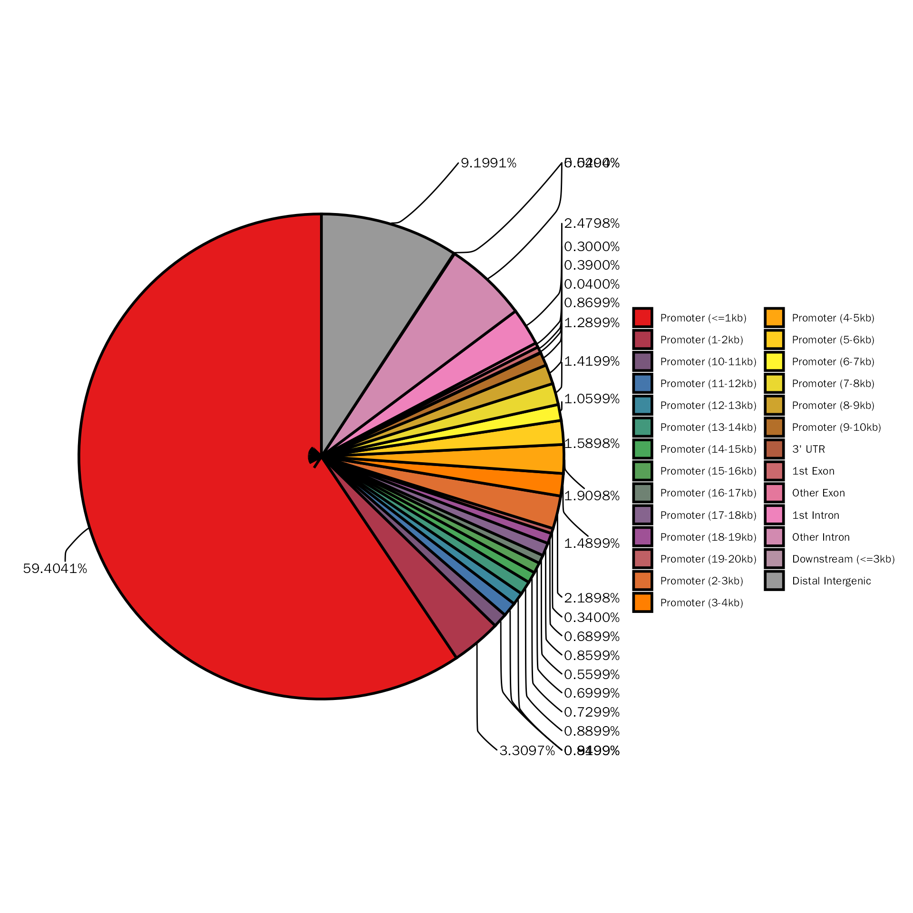
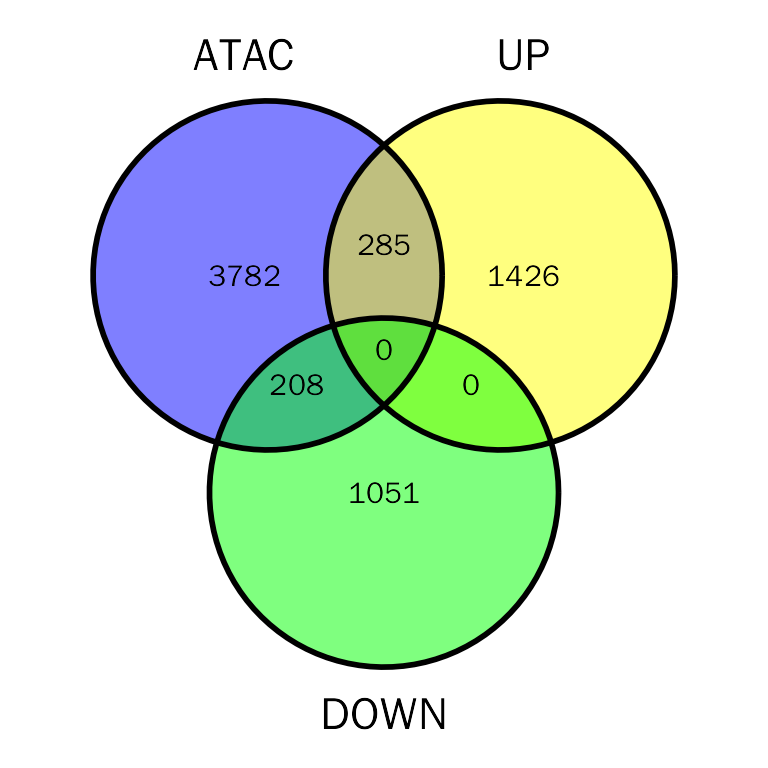
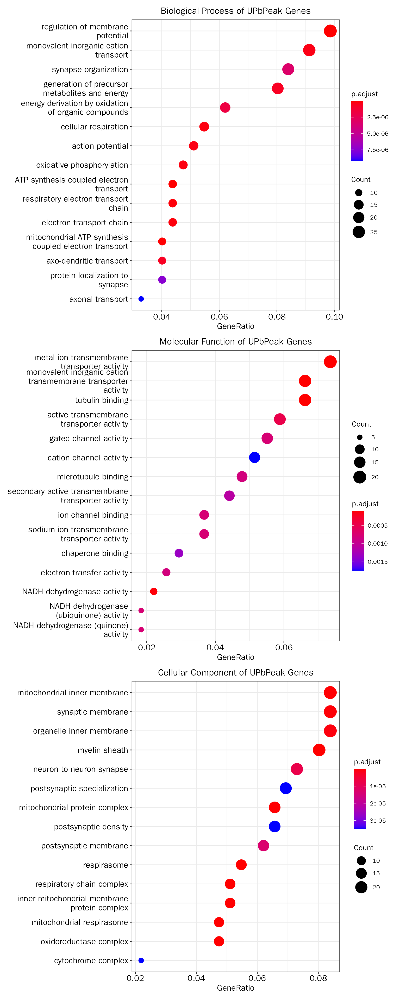

IntegrateATAC
IntegrateATAC.RmdIntroduction
Eukaryotic chromatin is tightly packaged into nucleosomes, and the positioning of nucleosomes can regulate gene expression by changing the in vivo availability of binding sites to transcription factors (TFs). Assay of Transposase Accessible Chromatin sequencing (ATAC-seq) is a technique used to assess genome-wide chromatin accessibility. Thus, combining ATAC-seq with RNA-seq can be used to understanding the role of chromatin structure in regulating gene expression.
Example data
The data used here contains RNA-seq and ATAC-seq datasets from RUNX represses Pmp22 to drive neurofibromagenesis:
Differential Expression Analysis (RNA-seq)
The RNA-seq data used here are same as used in “IntegrateChIP” vignette.
# library
suppressWarnings(suppressMessages(library(DESeq2)))
suppressWarnings(suppressMessages(library(DEbPeak)))
# prepare count matrix and metadata
debatac.count.file <- system.file("extdata", "debchip_count.txt", package = "DEbPeak")
debatac.meta.file <- system.file("extdata", "debchip_meta.txt", package = "DEbPeak")
debatac.count.matrix <- read.table(file = debatac.count.file, header = T, sep = "\t")
debatac.meta.info <- read.table(file = debatac.meta.file, header = T)
# create DESeqDataSet object
debatac.dds <- DESeq2::DESeqDataSetFromMatrix(countData = debatac.count.matrix,
colData = debatac.meta.info,
design = ~condition)## Warning in DESeqDataSet(se, design = design, ignoreRank): some variables in
## design formula are characters, converting to factors
# set control level
debatac.dds$condition <- relevel(debatac.dds$condition, ref = "NF")
# conduct differential expressed genes analysis
debatac.dds <- DESeq(debatac.dds)## estimating size factors## estimating dispersions## gene-wise dispersion estimates## mean-dispersion relationship## final dispersion estimates## fitting model and testing
# extract results
debatac.dds.results <- results(debatac.dds,contrast=c("condition",'RX','NF'))
debatac.dds.results.ordered <- debatac.dds.results[order(debatac.dds.results$log2FoldChange,decreasing = TRUE),]
head(debatac.dds.results.ordered)## log2 fold change (MLE): condition RX vs NF
## Wald test p-value: condition RX vs NF
## DataFrame with 6 rows and 6 columns
## baseMean log2FoldChange lfcSE stat pvalue padj
## <numeric> <numeric> <numeric> <numeric> <numeric> <numeric>
## Sycp1 12.07541 7.15056 3.91075 1.82844 6.74840e-02 1.81006e-01
## Gm16532 10.07020 6.89407 1.74281 3.95573 7.63014e-05 7.17146e-04
## Hs3st4 18.88787 6.82852 1.42952 4.77679 1.78117e-06 2.83848e-05
## Nell1 34.13399 6.80718 1.34257 5.07027 3.97260e-07 7.79916e-06
## Sptssb 9.39376 6.78558 1.52948 4.43651 9.14275e-06 1.16684e-04
## Myo3a 7.19992 6.41077 1.74865 3.66612 2.46259e-04 1.94151e-03Process ATAC-seq data
Consensus peaks
# get consensus peak
atac.peak.file <- system.file("extdata", "debatac_peaks.bed", package = "DEbPeak")
atac.peak.df <- GetConsensusPeak(peak.file = atac.peak.file)
head(atac.peak.df)## chr start stop name score
## 1 chr4 52439068 52439142 chr4-383 1
## 2 chr4 139622902 139622976 chr4-99 1
## 3 chr8 84662748 84662822 chr8-119 1
## 4 chr8 70699040 70699114 chr8-115 1
## 5 chr8 69625402 69625476 chr8-202 1
## 6 chr13 119597770 119597844 chr13-92 1Peak profile
Check the profle of consensus peaks:
# peak profile plot
atac.peak.profile <- PeakProfile(atac.peak.df, species = "Mouse", by = "gene", region.type = "body", nbin = 800)## >> preparing promoter regions... 2023-07-02 17时56分45秒
## >> preparing tag matrix... 2023-07-02 17时56分46秒
## >> preparing start_site regions by ... 2023-07-02 17时56分46秒
## >> preparing tag matrix... 2023-07-02 17时56分46秒
## >> generating figure... 2023-07-02 17时57分00秒## >> done... 2023-07-02 17时57分05秒## >> binning method is used...2023-07-02 17时57分06秒
## >> preparing start_site regions by gene... 2023-07-02 17时57分06秒
## >> preparing tag matrix by binning... 2023-07-02 17时57分06秒
## >> Running bootstrapping for tag matrix... 2023-07-02 17时57分49秒
## >> binning method is used...2023-07-02 17时57分49秒
## >> preparing body regions by gene... 2023-07-02 17时57分49秒
## >> preparing tag matrix by binning... 2023-07-02 17时57分49秒
## >> preparing matrix with extension from (TSS-20%)~(TTS+20%)... 2023-07-02 17时57分49秒
## >> 16 peaks(0.296077%), having lengths smaller than 800bp, are filtered... 2023-07-02 17时57分56秒
## >> Running bootstrapping for tag matrix... 2023-07-02 18时00分46秒
atac.peak.profile$profile.plotCheck the reads profile with deepTools:
ReadProfile(bw.folder = '/home/songyabing/R/learn/tmp/DEbPeak/deeptools/ATAC-seq', species = "Mouse",
deeptools.path = "~/anaconda3/bin",
out.folder = "/home/songyabing/R/learn/tmp/DEbPeak/deeptools/ATAC-seq")
Peak annotation
In this step, we will perform peak annotation with ChIPseeker. This will include annotating peaks with its nearby genes, assigning genomic region of the peaks, et al.
# peak annotation
atac.peak.anno <- AnnoPeak(
peak.df = atac.peak.df, species = "Mouse",
seq.style = "UCSC", up.dist = 20000, down.dist = 20000
)## ## >> preparing features information... 2023-07-02 18时00分49秒
## >> identifying nearest features... 2023-07-02 18时00分50秒
## >> calculating distance from peak to TSS... 2023-07-02 18时00分50秒
## >> assigning genomic annotation... 2023-07-02 18时00分50秒
## >> adding gene annotation... 2023-07-02 18时01分02秒## 'select()' returned 1:many mapping between keys and columns## >> assigning chromosome lengths 2023-07-02 18时01分02秒
## >> done... 2023-07-02 18时01分02秒## Warning: Removed 23 rows containing non-finite values (`stat_count()`).
atac.peak.anno.df = atac.peak.anno$df
head(atac.peak.anno.df)## seqnames start end width strand name score annotation
## 1 chr4 52439069 52439142 74 * chr4-383 1 Promoter (<=1kb)
## 2 chr4 139622903 139622976 74 * chr4-99 1 Promoter (<=1kb)
## 3 chr8 84662749 84662822 74 * chr8-119 1 Promoter (<=1kb)
## 4 chr8 70699041 70699114 74 * chr8-115 1 Promoter (<=1kb)
## 5 chr8 69625403 69625476 74 * chr8-202 1 Promoter (<=1kb)
## 6 chr13 119597771 119597844 74 * chr13-92 1 Promoter (8-9kb)
## geneChr geneStart geneEnd geneLength geneStrand geneId transcriptId
## 1 1 52439243 52488260 49018 1 14211 ENSMUST00000102915.9
## 2 1 139622894 139649687 26794 1 212647 ENSMUST00000146309.7
## 3 2 84661331 84662854 1524 2 15936 ENSMUST00000060427.5
## 4 2 70698949 70700616 1668 1 16478 ENSMUST00000095267.5
## 5 2 69618869 69625545 6677 2 234362 ENSMUST00000140522.1
## 6 3 119606650 119610458 3809 1 633640 ENSMUST00000178948.1
## distanceToTSS ENSEMBL SYMBOL
## 1 -101 ENSMUSG00000028312 Smc2
## 2 9 ENSMUSG00000028737 Aldh4a1
## 3 32 ENSMUSG00000053560 Ier2
## 4 92 ENSMUSG00000071076 Jund
## 5 69 ENSMUSG00000060427 Zfp868
## 6 -8806 ENSMUSG00000074634 Tmem267
## GENENAME anno
## 1 structural maintenance of chromosomes 2 Promoter
## 2 aldehyde dehydrogenase 4 family, member A1 Promoter
## 3 immediate early response 2 Promoter
## 4 jun D proto-oncogene Promoter
## 5 zinc finger protein 868 Promoter
## 6 transmembrane protein 267 Promoter
atac.peak.anno$plotsThe above pie plot is not based on ggplot2, here we provide function to create pie plot based on ggplot2:
PeakAnnoPie(atac.peak.anno$anno.obj)
Motif analysis
Here, we will perform de novo motif discovery to illustrate the binding motif:
# this step is time consuming!
MotifDiscovery(peak.df = atac.peak.df, genome = '/path/to/genome.fa',
streme.path = "~/data/software/meme-5.5.2/bin/streme",
samtools.path = "/home/songyabing/data/software/samtools-1.17/samtools",
out.folder = "/path/to/output", show.html = FALSE)
# after running, there will be a browser pop-up window to show the results.Integrate ATAC-seq and RNA-seq
In this step, we will integrate ATAC-seq and RNA-seq to explore the role of chromatin structure of promoter region in regulating target gene expression.
Integrate
debatac.res = DEbPeak(de.res = debatac.dds.results.ordered, peak.res = atac.peak.anno.df, peak.anno.key = "Promoter", merge.key="SYMBOL", species = "Mouse")## Differential expression analysis with DESeq2!
head(debatac.res)## SYMBOL geneId Peak annotation anno
## 1 0610009E02Rik 100125929 chr2:26446213-26446286 Promoter (<=1kb) Promoter
## 2 0610012G03Rik 106264 chr16:31948207-31948280 Promoter (<=1kb) Promoter
## 3 0610039K10Rik 68386 chr2:163644811-163644884 Promoter (<=1kb) Promoter
## 4 1110002J07Rik 68488 chr10:66935911-66935984 Promoter (15-16kb) Promoter
## 5 1110004F10Rik 56372 chr7:116039769-116039842 Promoter (<=1kb) Promoter
## 6 1110008P14Rik <NA> <NA> <NA> <NA>
## ENSEMBL GENENAME log2FoldChange abundance
## 1 ENSMUSG00000086714 RIKEN cDNA 0610009E02 gene NA NA
## 2 ENSMUSG00000107002 RIKEN cDNA 0610012G03 gene 1.83766794 59.17919
## 3 ENSMUSG00000058812 RIKEN cDNA 0610039K10 gene NA NA
## 4 <NA> RIKEN cDNA 1110002J07 gene NA NA
## 5 ENSMUSG00000030663 RIKEN cDNA 1110004F10 gene 0.02994335 493.97014
## 6 <NA> <NA> 1.01354585 125.76554
## signif regulation Type
## 1 NA <NA> Peak
## 2 3.0737731 Up_regulated UPbPeak
## 3 NA <NA> Peak
## 4 NA <NA> Peak
## 5 0.0232188 Not_regulated Peak
## 6 2.2775663 Up_regulated UPIntegrate summary
# DE and ATAC venn plot
# debatac.plot = PlotDEbPeak(debatac.res, peak.type = "ATAC", gene.col = "SYMBOL", show_percentage=FALSE)
debatac.plot = InteVenn(inte.res = debatac.res, inte.type = "DEbPeak", peak.type = "ATAC",
peak.mode = "consensus", gene.col = "SYMBOL", show_percentage=FALSE)
debatac.plot
Functional enrichment
There are five categories for users to choose to perform functional enrichment: UP, Peak, DOWN, DOWNbPeak, UPbPeak. Here, we will use DOWNbPeak and UPbPeak as examples.
UPbPeak
# functional enrichment on direct targets
# debatac.up.fe.results = DEbPeakFE(de.peak = debatac.res, peak.fe.key = "UPbPeak", gene.type = "ENTREZID", species="Mouse",save = F)
debatac.up.fe.results = InteFE(inte.res = debatac.res, fe.key = "UPbPeak", gene.type = "ENTREZID",
inte.type = "DEbPeak", species="Mouse",save = F)## conduct ALL GO enrichment analysis on: UPbPeak## wrong orderBy parameter; set to default `orderBy = "x"`## Scale for y is already present.
## Adding another scale for y, which will replace the existing scale.
## wrong orderBy parameter; set to default `orderBy = "x"`
##
## Scale for y is already present.
## Adding another scale for y, which will replace the existing scale.
## wrong orderBy parameter; set to default `orderBy = "x"`
##
## Scale for y is already present.
## Adding another scale for y, which will replace the existing scale.The results:
# the result table
head(debatac.up.fe.results[["GO"]][["table"]])## ONTOLOGY ID
## GO:0042391 BP GO:0042391
## GO:0042773 BP GO:0042773
## GO:0042775 BP GO:0042775
## GO:0022904 BP GO:0022904
## GO:0022900 BP GO:0022900
## GO:0006119 BP GO:0006119
## Description GeneRatio
## GO:0042391 regulation of membrane potential 27/274
## GO:0042773 ATP synthesis coupled electron transport 12/274
## GO:0042775 mitochondrial ATP synthesis coupled electron transport 11/274
## GO:0022904 respiratory electron transport chain 12/274
## GO:0022900 electron transport chain 12/274
## GO:0006119 oxidative phosphorylation 13/274
## BgRatio pvalue p.adjust qvalue
## GO:0042391 450/23328 4.718947e-12 8.882376e-09 7.311849e-09
## GO:0042773 61/23328 5.661170e-12 8.882376e-09 7.311849e-09
## GO:0042775 57/23328 5.493753e-11 5.746466e-08 4.730411e-08
## GO:0022904 81/23328 1.866301e-10 1.464113e-07 1.205238e-07
## GO:0022900 84/23328 2.890041e-10 1.813790e-07 1.493087e-07
## GO:0006119 108/23328 4.647073e-10 2.430419e-07 2.000687e-07
## geneID
## GO:0042391 Asic1/Atp1a1/Atp1a3/Bad/Cacnb3/Cacng2/Chrnb2/Fkbp1b/Grin1/Hebp2/Kcnb1/Kcnh2/Kcnip1/Mapt/Mllt11/Ndufs1/Nedd4l/Ntrk3/Pmp22/Rapgef4/Rnf207/Scn10a/Slc17a7/Slc4a4/Tac1/Trpv1/Ywhah
## GO:0042773 Cox4i1/Cox5a/Cox6a1/Cyc1/Dnajc15/Ndufa10/Ndufa12/Ndufb8/Ndufs1/Ndufv1/Sdhd/Uqcrc1
## GO:0042775 Cox4i1/Cox5a/Cox6a1/Cyc1/Dnajc15/Ndufa10/Ndufa12/Ndufb8/Ndufv1/Sdhd/Uqcrc1
## GO:0022904 Cox4i1/Cox5a/Cox6a1/Cyc1/Dnajc15/Ndufa10/Ndufa12/Ndufb8/Ndufs1/Ndufv1/Sdhd/Uqcrc1
## GO:0022900 Cox4i1/Cox5a/Cox6a1/Cyc1/Dnajc15/Ndufa10/Ndufa12/Ndufb8/Ndufs1/Ndufv1/Sdhd/Uqcrc1
## GO:0006119 Cox4i1/Cox5a/Cox6a1/Cyc1/Dnajc15/Ndufa10/Ndufa12/Ndufb8/Ndufs1/Ndufv1/Ppif/Sdhd/Uqcrc1
## Count
## GO:0042391 27
## GO:0042773 12
## GO:0042775 11
## GO:0022904 12
## GO:0022900 12
## GO:0006119 13
# the result plot
debatac.up.fe.results[["GO"]][["plot"]]
DOWNbPeak
# functional enrichment on direct targets
# debatac.down.fe.results = DEbPeakFE(de.peak = debatac.res, peak.fe.key = "DOWNbPeak",
# gene.type = "ENTREZID", species="Mouse",save = F)
debatac.down.fe.results = InteFE(inte.res = debatac.res, fe.key = "DOWNbPeak", inte.type = "DEbPeak",
gene.type = "ENTREZID", species="Mouse",save = F)## conduct ALL GO enrichment analysis on: DOWNbPeak## wrong orderBy parameter; set to default `orderBy = "x"`## Scale for y is already present.
## Adding another scale for y, which will replace the existing scale.
## wrong orderBy parameter; set to default `orderBy = "x"`
##
## Scale for y is already present.
## Adding another scale for y, which will replace the existing scale.
## wrong orderBy parameter; set to default `orderBy = "x"`
##
## Scale for y is already present.
## Adding another scale for y, which will replace the existing scale.The results:
# the result table
head(debatac.down.fe.results[["GO"]][["table"]])## ONTOLOGY ID
## GO:0002683 BP GO:0002683
## GO:0043062 BP GO:0043062
## GO:0007179 BP GO:0007179
## GO:0071560 BP GO:0071560
## GO:0071559 BP GO:0071559
## GO:0007178 BP GO:0007178
## Description
## GO:0002683 negative regulation of immune system process
## GO:0043062 extracellular structure organization
## GO:0007179 transforming growth factor beta receptor signaling pathway
## GO:0071560 cellular response to transforming growth factor beta stimulus
## GO:0071559 response to transforming growth factor beta
## GO:0007178 transmembrane receptor protein serine/threonine kinase signaling pathway
## GeneRatio BgRatio pvalue p.adjust qvalue
## GO:0002683 23/199 462/23328 1.208415e-11 2.069637e-08 1.284615e-08
## GO:0043062 19/199 303/23328 1.612796e-11 2.069637e-08 1.284615e-08
## GO:0007179 15/199 169/23328 1.813350e-11 2.069637e-08 1.284615e-08
## GO:0071560 16/199 208/23328 3.319841e-11 2.841784e-08 1.763884e-08
## GO:0071559 16/199 212/23328 4.421178e-11 3.027623e-08 1.879234e-08
## GO:0007178 20/199 368/23328 6.064668e-11 3.460904e-08 2.148169e-08
## geneID
## GO:0002683 Anxa1/Apod/Arrb2/Axl/Cd86/Ctla4/Fbn1/H2-T23/Hfe/Hlx/Htra1/Il4ra/Lgals3/Lrrc32/Ptk2b/Samhd1/Sdc4/Tap1/Tgfb1/Tgfb2/Tmem176b/Zc3h12d/Zfp36
## GO:0043062 Adamts14/Bcl3/Col15a1/Col16a1/Col18a1/Col1a2/Col8a1/Ddr2/Fbln2/Foxc2/Lgals3/Ntn4/Serpinh1/Sulf2/Tex14/Tgfb1/Tgfb2/Tgfbr1/Tnfrsf1b
## GO:0007179 Arrb2/Ccl2/Cited2/Col1a2/Fbn1/Fos/Gdnf/Htra1/Lrrc32/Skil/Spred1/Spry1/Tgfb1/Tgfb2/Tgfbr1
## GO:0071560 Arrb2/Ccl2/Cited2/Col1a2/Fbn1/Fos/Gdnf/Htra1/Lrrc32/Serpine1/Skil/Spred1/Spry1/Tgfb1/Tgfb2/Tgfbr1
## GO:0071559 Arrb2/Ccl2/Cited2/Col1a2/Fbn1/Fos/Gdnf/Htra1/Lrrc32/Serpine1/Skil/Spred1/Spry1/Tgfb1/Tgfb2/Tgfbr1
## GO:0007178 Arrb2/Ccl2/Cited2/Col1a2/Fbn1/Fos/Foxd1/Gdnf/Hexa/Hfe/Htra1/Inhbb/Lrrc32/Skil/Spred1/Spry1/Tgfb1/Tgfb2/Tgfbr1/Trf
## Count
## GO:0002683 23
## GO:0043062 19
## GO:0007179 15
## GO:0071560 16
## GO:0071559 16
## GO:0007178 20
# the result plot
debatac.down.fe.results[["GO"]][["plot"]]Motif enrichment
Different from ChIP-seq which profile specific protein–DNA interactions (depends on the antibody provided), ATAC-seq can proflie global chromatin accessibility. Thus, the peaks of ATAC-seq may originate from hundreds of TFs. To reveal the possible TFs involved, motif enrichment analysis is a good solution.
As pointed above, there are five categories for users to choose to motif enrichment, we will use UPbPeak as example.
Motif analysis with Homer
# debatac.res: similar to debatac.res
# this step is time consuming!
ATAC.motif = FindMotif(inte.res = debatac.res, peak.motif.key = "UPbPeak", peak.mode = "consensus",
homer.motif.path = '~/anaconda3/bin/findMotifsGenome.pl',
out.folder = "/path/to/out/folder", other.paras = "-len 8,10,12 -size -100,50 -S 25")Motif analysis with MEME
de novo motif discovery
# this step is time consuming!
MotifDiscovery(inte.res = debatac.res, peak.motif.key = "UPbPeak",
genome = '/path/to/genome.fa', peak.mode = "consensus",
streme.path = "~/data/software/meme-5.5.2/bin/streme",
samtools.path = "/home/songyabing/data/software/samtools-1.17/samtools",
out.folder = "/path/to/denovo/output")Motif comparison
verteb.motifs = system.file("extdata", "homer_verteb.motifs.meme", package = "DEbPeak")
# this step is time consuming!
ATAC.denovo.motif = MotifCompare(motif.folder = "/path/to/denovo/output",
known.motif = verteb.motifs, tomtom.path = '~/data/software/meme-5.5.2/bin/tomtom',
out.folder = "/path/to/denovo/output")Save results
Save results for downstream analysis:
save.image(file = "/home/songyabing/R/learn/tmp/DEbPeak/RNAandATAC.RData")Session info
## R version 4.0.3 (2020-10-10)
## Platform: x86_64-conda-linux-gnu (64-bit)
## Running under: CentOS Linux 7 (Core)
##
## Matrix products: default
## BLAS/LAPACK: /home/softwares/anaconda3/envs/r4.0/lib/libopenblasp-r0.3.12.so
##
## locale:
## [1] LC_CTYPE=zh_CN.UTF-8 LC_NUMERIC=C
## [3] LC_TIME=zh_CN.UTF-8 LC_COLLATE=zh_CN.UTF-8
## [5] LC_MONETARY=zh_CN.UTF-8 LC_MESSAGES=zh_CN.UTF-8
## [7] LC_PAPER=zh_CN.UTF-8 LC_NAME=C
## [9] LC_ADDRESS=C LC_TELEPHONE=C
## [11] LC_MEASUREMENT=zh_CN.UTF-8 LC_IDENTIFICATION=C
##
## attached base packages:
## [1] stats4 stats graphics grDevices utils datasets methods
## [8] base
##
## other attached packages:
## [1] org.Mm.eg.db_3.12.0
## [2] TxDb.Mmusculus.UCSC.mm10.knownGene_3.10.0
## [3] GenomicFeatures_1.42.2
## [4] AnnotationDbi_1.52.0
## [5] DEbPeak_1.4.0
## [6] DESeq2_1.30.1
## [7] SummarizedExperiment_1.20.0
## [8] Biobase_2.50.0
## [9] MatrixGenerics_1.2.1
## [10] matrixStats_0.58.0
## [11] GenomicRanges_1.42.0
## [12] GenomeInfoDb_1.26.7
## [13] IRanges_2.24.1
## [14] S4Vectors_0.28.1
## [15] BiocGenerics_0.42.0
##
## loaded via a namespace (and not attached):
## [1] rsvd_1.0.3
## [2] ggvenn_0.1.9
## [3] apeglm_1.12.0
## [4] Rsamtools_2.6.0
## [5] rsvg_2.1
## [6] foreach_1.5.1
## [7] rprojroot_2.0.2
## [8] crayon_1.4.1
## [9] V8_3.4.2
## [10] MASS_7.3-58
## [11] nlme_3.1-152
## [12] backports_1.2.1
## [13] sva_3.38.0
## [14] GOSemSim_2.25.0
## [15] rlang_1.1.0
## [16] XVector_0.30.0
## [17] readxl_1.4.2
## [18] irlba_2.3.5
## [19] limma_3.46.0
## [20] GOstats_2.56.0
## [21] BiocParallel_1.24.1
## [22] rjson_0.2.20
## [23] bit64_4.0.5
## [24] glue_1.6.2
## [25] DiffBind_3.0.15
## [26] mixsqp_0.3-43
## [27] pheatmap_1.0.12
## [28] parallel_4.0.3
## [29] DEFormats_1.18.0
## [30] base64url_1.4
## [31] tcltk_4.0.3
## [32] DOSE_3.23.2
## [33] haven_2.5.2
## [34] tidyselect_1.2.0
## [35] rio_0.5.27
## [36] XML_3.99-0.6
## [37] tidyr_1.3.0
## [38] ggpubr_0.4.0
## [39] GenomicAlignments_1.26.0
## [40] xtable_1.8-4
## [41] ggnetwork_0.5.12
## [42] magrittr_2.0.3
## [43] evaluate_0.14
## [44] ggplot2_3.4.2
## [45] cli_3.6.1
## [46] zlibbioc_1.36.0
## [47] hwriter_1.3.2
## [48] rstudioapi_0.14
## [49] bslib_0.3.1
## [50] GreyListChIP_1.22.0
## [51] fastmatch_1.1-3
## [52] BiocSingular_1.6.0
## [53] xfun_0.30
## [54] askpass_1.1
## [55] clue_0.3-59
## [56] gson_0.0.9
## [57] cluster_2.1.1
## [58] caTools_1.18.2
## [59] tidygraph_1.2.0
## [60] tibble_3.2.1
## [61] ggrepel_0.9.1
## [62] Biostrings_2.58.0
## [63] png_0.1-7
## [64] withr_2.5.0
## [65] bitops_1.0-6
## [66] ggforce_0.3.3
## [67] RBGL_1.66.0
## [68] plyr_1.8.6
## [69] cellranger_1.1.0
## [70] GSEABase_1.52.1
## [71] pcaPP_2.0-1
## [72] dqrng_0.2.1
## [73] coda_0.19-4
## [74] pillar_1.9.0
## [75] gplots_3.1.1
## [76] GlobalOptions_0.1.2
## [77] cachem_1.0.4
## [78] fs_1.5.0
## [79] GetoptLong_1.0.5
## [80] clusterProfiler_4.7.1
## [81] DelayedMatrixStats_1.12.3
## [82] vctrs_0.6.2
## [83] generics_0.1.0
## [84] plot3D_1.4
## [85] tools_4.0.3
## [86] foreign_0.8-81
## [87] NOISeq_2.34.0
## [88] munsell_0.5.0
## [89] tweenr_1.0.2
## [90] fgsea_1.16.0
## [91] DelayedArray_0.16.3
## [92] fastmap_1.1.0
## [93] compiler_4.0.3
## [94] abind_1.4-5
## [95] rtracklayer_1.50.0
## [96] TxDb.Hsapiens.UCSC.hg19.knownGene_3.2.2
## [97] GenomeInfoDbData_1.2.4
## [98] gridExtra_2.3
## [99] edgeR_3.32.1
## [100] lattice_0.20-45
## [101] ggnewscale_0.4.7
## [102] AnnotationForge_1.32.0
## [103] utf8_1.2.1
## [104] dplyr_1.1.2
## [105] BiocFileCache_1.14.0
## [106] jsonlite_1.8.4
## [107] scales_1.2.1
## [108] graph_1.68.0
## [109] carData_3.0-4
## [110] sparseMatrixStats_1.2.1
## [111] TFEA.ChIP_1.10.0
## [112] genefilter_1.72.1
## [113] car_3.0-11
## [114] doParallel_1.0.16
## [115] latticeExtra_0.6-29
## [116] R.utils_2.12.0
## [117] brew_1.0-6
## [118] checkmate_2.0.0
## [119] rmarkdown_2.14
## [120] openxlsx_4.2.3
## [121] pkgdown_1.6.1
## [122] cowplot_1.1.1
## [123] textshaping_0.3.6
## [124] forcats_1.0.0
## [125] downloader_0.4
## [126] BSgenome_1.58.0
## [127] igraph_1.4.99.9024
## [128] survival_3.2-10
## [129] numDeriv_2016.8-1.1
## [130] yaml_2.2.1
## [131] plotrix_3.8-2
## [132] systemfonts_1.0.4
## [133] ashr_2.2-47
## [134] SQUAREM_2021.1
## [135] htmltools_0.5.2
## [136] memoise_2.0.0
## [137] VariantAnnotation_1.36.0
## [138] locfit_1.5-9.4
## [139] graphlayouts_0.7.1
## [140] batchtools_0.9.15
## [141] PCAtools_2.2.0
## [142] viridisLite_0.4.0
## [143] rrcov_1.7-0
## [144] digest_0.6.27
## [145] assertthat_0.2.1
## [146] rappdirs_0.3.3
## [147] emdbook_1.3.12
## [148] RSQLite_2.2.5
## [149] amap_0.8-18
## [150] yulab.utils_0.0.4
## [151] debugme_1.1.0
## [152] misc3d_0.9-1
## [153] data.table_1.14.2
## [154] blob_1.2.1
## [155] R.oo_1.24.0
## [156] ragg_0.4.0
## [157] labeling_0.4.2
## [158] splines_4.0.3
## [159] ggupset_0.3.0
## [160] RCurl_1.98-1.3
## [161] broom_1.0.4
## [162] hms_1.1.3
## [163] colorspace_2.0-0
## [164] BiocManager_1.30.16
## [165] shape_1.4.6
## [166] sass_0.4.1
## [167] GEOquery_2.58.0
## [168] Rcpp_1.0.9
## [169] mvtnorm_1.1-2
## [170] circlize_0.4.15
## [171] enrichplot_1.10.2
## [172] fansi_0.4.2
## [173] tzdb_0.3.0
## [174] truncnorm_1.0-8
## [175] ChIPseeker_1.33.0.900
## [176] R6_2.5.0
## [177] grid_4.0.3
## [178] lifecycle_1.0.3
## [179] ShortRead_1.48.0
## [180] zip_2.1.1
## [181] curl_4.3
## [182] ggsignif_0.6.3
## [183] jquerylib_0.1.3
## [184] robustbase_0.95-0
## [185] DO.db_2.9
## [186] Matrix_1.5-4
## [187] qvalue_2.22.0
## [188] desc_1.3.0
## [189] org.Hs.eg.db_3.12.0
## [190] RColorBrewer_1.1-2
## [191] iterators_1.0.13
## [192] stringr_1.5.0
## [193] DOT_0.1
## [194] ggpie_0.2.5
## [195] beachmat_2.6.4
## [196] polyclip_1.10-0
## [197] biomaRt_2.46.3
## [198] purrr_1.0.1
## [199] shadowtext_0.0.9
## [200] gridGraphics_0.5-1
## [201] mgcv_1.8-34
## [202] ComplexHeatmap_2.13.1
## [203] openssl_1.4.3
## [204] patchwork_1.0.0
## [205] bdsmatrix_1.3-4
## [206] codetools_0.2-18
## [207] invgamma_1.1
## [208] GO.db_3.12.1
## [209] gtools_3.8.2
## [210] prettyunits_1.1.1
## [211] dbplyr_2.3.2
## [212] R.methodsS3_1.8.1
## [213] gtable_0.3.0
## [214] DBI_1.1.1
## [215] highr_0.8
## [216] ggfun_0.0.6
## [217] httr_1.4.5
## [218] KernSmooth_2.23-18
## [219] stringi_1.5.3
## [220] progress_1.2.2
## [221] reshape2_1.4.4
## [222] farver_2.1.0
## [223] annotate_1.68.0
## [224] viridis_0.6.1
## [225] Rgraphviz_2.34.0
## [226] xml2_1.3.4
## [227] bbmle_1.0.24
## [228] systemPipeR_1.24.3
## [229] boot_1.3-28
## [230] readr_2.1.4
## [231] geneplotter_1.68.0
## [232] ggplotify_0.1.0
## [233] Category_2.56.0
## [234] DEoptimR_1.0-11
## [235] bit_4.0.4
## [236] scatterpie_0.1.7
## [237] jpeg_0.1-8.1
## [238] ggraph_2.0.5
## [239] pkgconfig_2.0.3
## [240] rstatix_0.7.0
## [241] knitr_1.37